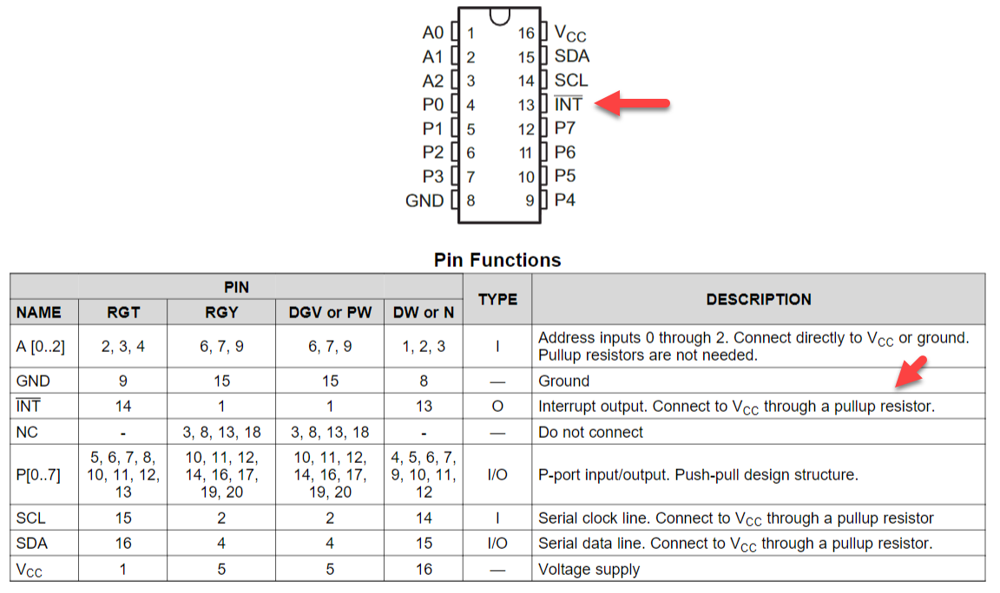
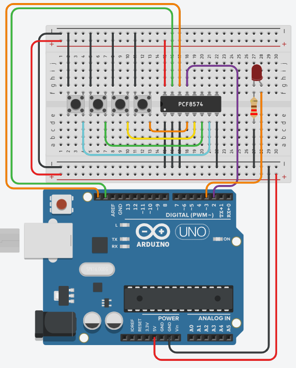

In labo 4 moest je je I/O-expander telkens opnieuw vragen of er al iets gebeurd was. Vanaf nu meldt hij het zelf, en tegelijk leer je waarom je in een ISR geen enkele I²C-opdracht mag geven.
De PCF8574 heeft een pin die je in labo 4 niet gebruikt hebt: /INT. Zodra er op een van de acht I/O-lijnen iets verandert, trekt de chip die pin laag. Hang je hem aan een interruptpin van je Arduino, dan hoef je nooit meer uit jezelf te gaan kijken.
Deze oefening werk je uit in TinkerCAD.

Die zin in de datasheet is belangrijk. /INT is een open-collectoruitgang. De chip kan die pin wel naar de massa trekken, maar niet naar de plus duwen. Zonder pull-up zweeft hij dus, en meet je willekeurige rommel.
Zet de pin van je Arduino op INPUT_PULLUP. Dan zit de pull-up al in je Arduino en heb je aan de bedrading niets extra's.
De streep voor de naam, /INT, betekent trouwens actief laag. De melding is dat de pin naar 0 gaat, niet naar 1. Je interrupt gaat dus af op FALLING.

| Waar | Waarop |
|---|---|
| SDA (A4) en SCL (A5) | De I²C-bus naar de PCF8574, net als in labo 4 |
| P0 t.e.m. P3 van de expander | Vier drukknoppen naar de massa |
| /INT van de expander (pin 13) | Pin 2 van je Arduino, met INPUT_PULLUP |
| Pin 4 van je Arduino | Een led, via een weerstand van 220 Ω |
Het adres van je expander vind je met de scanner uit Het I²C adres vinden. Ga er niet vanuit dat het hetzelfde is als bij je buur, want het hangt af van hoe A0, A1 en A2 aangesloten zijn, en van welke versie van de chip je hebt.
De opdracht is eenvoudig. Elke druk op eender welke van de vier knoppen schakelt de led om. Brandt hij, dan gaat hij uit, en omgekeerd.
Maar er zitten drie valkuilen in, en op elk ervan kan je lang zoeken.
De opdracht zoals hij in het oude cursusmateriaal staat, luidt: lees in je ISR de knoppen uit, en houd je loop() volledig leeg. Dat kan niet. Probeer je het, dan hangt je bord vast en helpt alleen de resetknop nog.
De I²C-hardware in je chip werkt byte per byte, en gebruikt zelf een interrupt om na elke byte verder te gaan. Wire.requestFrom() zet de overdracht in gang en blijft dan wachten tot die klaar is.
Maar in een ISR staan alle interrupts uit. Die hulp komt dus nooit, en Wire.requestFrom() blijft eeuwig wachten. Je krijgt geen foutmelding en geen timeout, en je bord doet niets meer.
Je lost dit ook niet op door interrupts() bovenaan je ISR te zetten. Zie De regels van een ISR voor waarom dat nog erger is.
De oplossing is het vlagpatroon. Je ISR zet alleen een volatile bool op true, en je loop() doet het I²C-werk. Je loop() blijft dus niet leeg, maar hij wordt wel heel kort.
De expander laat /INT pas weer los wanneer jij hem uitleest. Doe je dat niet, dan blijft die pin laag hangen, komt er nooit meer een dalende flank, en gaat je interrupt precies één keer af in de hele levensduur van je programma.
Dat heeft ook een gevolg voor je setup(). Lees de expander daar één keer uit voordat je attachInterrupt() oproept. Bij het opstarten staat /INT vaak al laag, en dan wacht je anders op een flank die al gepasseerd is.
De expander meldt elke verandering, dus zowel het indrukken als het loslaten van een knop. Laat je je led bij elke melding omschakelen, dan schakelt hij twee keer per druk om en zie je er niets van.
Je moet dus zelf uitzoeken welke bits van 1 naar 0 gegaan zijn. Dat idioom ken je al uit Teller met I²C-drukknoppen:
byte netIngedrukt = ~knoppen & vorigeKnoppen;Herlees zo nodig Bits.
Sla je oefening op.
Overloop volgende checklist om je oefening zelf te evalueren:
De twee hulpfuncties schrijfExpander() en leesExpander() komen letterlijk uit labo 4. Alles wat nieuw is, zit in de ISR van één regel en in de eerste regels van de loop().
#include <Wire.h>
const int adresExpander = 0x38; // controleer met de I2C scanner
const int intPin = 2;
const int ledPin = 4;
volatile bool expanderVeranderd = false;
byte vorigeKnoppen = 0xFF;
bool ledBrandt = false;
// De hele ISR. Meer mag er niet in: een Wire-opdracht zou hier voor eeuwig
// blijven wachten, want de I2C-hardware heeft zelf een interrupt nodig om
// klaar te raken, en die staat uit zolang we hier zitten.
void expanderVeranderde()
{
expanderVeranderd = true;
}
void schrijfExpander(byte waarde)
{
Wire.beginTransmission(adresExpander);
Wire.write(waarde);
Wire.endTransmission();
}
byte leesExpander()
{
Wire.requestFrom(adresExpander, 1);
if (Wire.available())
{
return Wire.read();
}
return 0xFF; // niets ontvangen: doe alsof geen enkele knop ingedrukt is
}
void setup()
{
pinMode(ledPin, OUTPUT);
digitalWrite(ledPin, LOW);
// /INT kan alleen laag trekken, dus het hoge niveau moet van onze pull-up komen
pinMode(intPin, INPUT_PULLUP);
Wire.begin();
schrijfExpander(0xFF); // alle pinnen hoog, anders lees je de knoppen niet
// Een keer lezen wist een /INT die al actief was. Sla je dit over, dan
// staat de lijn misschien al laag en komt er nooit een dalende flank.
vorigeKnoppen = leesExpander();
attachInterrupt(digitalPinToInterrupt(intPin), expanderVeranderde, FALLING);
}
void loop()
{
if (expanderVeranderd == false)
{
return; // niets te doen
}
// Eerst de vlag neerhalen, dan pas lezen. Verandert er iets tijdens het
// lezen, dan zet de nieuwe /INT de vlag gewoon opnieuw en missen we niets.
expanderVeranderd = false;
byte knoppen = leesExpander();
// /INT meldt ook het loslaten. Alleen een bit dat van 1 naar 0 ging hoort
// bij een knop die net ingedrukt werd.
byte netIngedrukt = ~knoppen & vorigeKnoppen & B00001111;
vorigeKnoppen = knoppen;
if (netIngedrukt != 0)
{
ledBrandt = !ledBrandt;
digitalWrite(ledPin, ledBrandt);
delay(20); // even de dendering laten uitsterven
// Dat gestuiter heeft ondertussen nieuwe meldingen opgeleverd. Opruimen,
// anders schakelt de LED zo dadelijk nog een paar keer om.
expanderVeranderd = false;
vorigeKnoppen = leesExpander();
}
}Alleen P0 tot P3 hebben een knop. P4 tot P7 hangen nergens aan en kunnen dus van alles teruggeven. Met dat masker gooi je de bovenste vier bits weg en kijk je alleen naar de vier die er echt toe doen.
Laat je het weg, dan schakelt je led misschien om door een zwevende pin waar je nooit aan geraakt hebt.
Bovenaan de loop() staat een delay(20), terwijl je net geleerd hebt dat delay() in een ISR verboden is. Dat klopt allebei, want die delay() staat in je loop() en niet in je ISR.
Dat is wat het vlagpatroon je oplevert. Alles wat in een ISR niet mag, mag hier wel, omdat je het uit de ISR gehaald hebt.